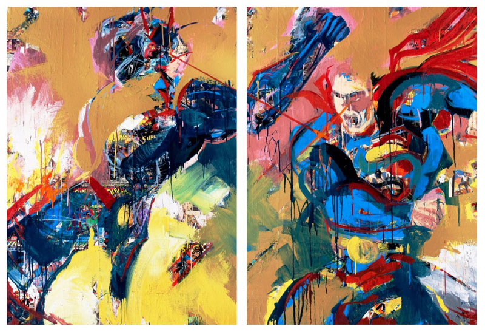

David Leblanc
June 2012 - Transition Gallery
SLAM! BAM! BOOM!
My love of comic books, superheroes, and the escapism they embrace goes back to my youth. I often spent extended periods of time in the car reading comic books while I and my father waited for my mother, who was a registered nurse, to complete her shift. My father would pick me up from my daycare provider, and we would drop by 7-11 before going to the hospital. Spider-Man, Fantastic Four, The Invaders, and the Avengers would fill my time and imagination as we waited.
From the beginning, the Action Abstraction series inspired by my boyhood fascination has advanced from painting to painting through a series of steps, revelations, and progressions in concept and technique that propelled its evolution. Elements were added and subtracted one or two at a time as I took what I learned from one completed painting, and applied it to other partial completed work.
From the beginning, the explosion of primary colors throughout my Action Abstractionpaintings echoed the effects of the old 1930’s and 1940’s three-color press. Bold, robust brushstrokes and gentle criss-crossing painterly drips delved into the essential questions of the use of color, composition, and balance of abstract expressionism while deconstructing iconic images of classic comic book characters including DC Comics’ Superman. Simultaneously, I integrated tangible elements of pop art from Action Comics covers from the 1930’s-1950’s (including titles, numbers, prices, copyright symbols, etc.).
At first, the sole medium of these paintings was acrylic enamel, but soon collage of comic books, art magazines, popular magazines and advertisements were layered within the paintings. The process changed again when the “under-painting” of these canvases began with a foundation of collage from torn pages of actual comic books, photographs, drawings, words and numbers that served as structural anchors within the work. The spontaneous, layered pictures of acrylic enamel paint combined with more collage generate varied textures and depth within each painting. The layering of elements subsequently gives rise to a sense of mystery as the viewer sees only hints, partial views, fragments, excerpts of the underlying layers. The combination gives my canvases depth and impact.
- David Leblanc
{kind=link}
{kind=link}